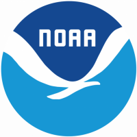

Anti-Fluttering Control System Report
Used MATLAB’s modeling a control system extension to create Bode, Root Locus, and Pole Zero plots.
Then analyze the graphs/plots and laplacing given equations to determine the velocity when fluttering occurs.
Using the given and determined variables to create the sensor's transfer function, which is applied in aeroelastic
motion equation, with given coefficients, to determine the wing transfer function. From the transfer function
develop a controller to minimize settling time and angle of the wing
Used NX to design the cart and track with teammates and laser cuts wood segment for assembling.
After designing the parts, the cart was controlled by an Arduino board to take data from the sensor
and conditions which my teamates and I coded onto the board. Finally designed a RoboGrow Website to provide
information but also acts as an app to adjust conditional variables.
RoboGrow Website
Marshmellow Launcher
Using Solidworks, created a general 3D model of the launcher's design then gather parts from the workshops and hardware stores.
The team decided to use a pvc motor design, so the accuracy of the launcher would be more consistent. As a result, the design requires
a strong foundation to counteract the recoil from launching. With the final design, parts were machined into CAD dimensions and then assembled.
Modifcation on the launcher were required after testing the launcher, espically when it came to the launch angle.

2D Satellite Image to 3D Model
During the GOES-R Hackathon, my team of four created a mobile app that converted 2D satellite images to 3D CAD files.
This allowed satellite images to be 3D printed, which makes it easier to understand than an infrared image or something.
For the converter, there were already software that allowed 2D conversion to 3D so that was what we used since we only had
two days to develop an application from scratch. Ultimately, we got first place with our idea to display 2D images in a 3D format.
Hackathon Page

Discord Bot
The discord bot I created didn't do a lot but included basic python code with the usage of loops, arrays, and conditional statements.
During the summer of 2022 I was enrolled in SYEP, summer youth employment program, I was placed to work at the Department of Motor Vechile.
There was four other SYEP workers and we decided to communicate through discord. I decided to create a bot that send annoucment during certain
time of the day like when it's lunch break, when break is over, when it's time to leave, and when to start working.
In addition, the bot also has a reaction tracker which was used for determining who was in the building or who went out or stayed in for lunch.
Simple Bot's Code
Simulating Stress & Strain
Used NX Nastran and NX to design 3D components, then set up the meshes to applied loads and restraints. With the model,
loads, and restraints run a simulation to determine stress and deflections. For simpler 2D representations, matrices were
used to hand calculate the displacement and unknown reaction force
A robotic device that senses motion to initiate motors to fold a 3D printed origami fabric.
Currently, the device is still in the prototype stage, we are testing and adjusting the dimensions of the units.

Personal Website
Created two personal website with terrible layouts to display my skills and information on my resume. Due to
not having a clear design in mind the website just ahve features but looks plain and simple. The websites were hard coded
with HTML, CSS, and JavaScript.
First Personal Website
Second Personal Website
2D Game Development
Created two 2D Unity games, to begin my journey into programming. Learnt the fundemental of Unity and C# by using YouTube
as a resource. First game was multiplayer but ran into a lot of bugs when it comes to the multiplayer aspect. However, the goal
was to create a game, where my friends would be able to play. The game worked but causes screen flickering which made it annoying.
Therefore, the first game I created was used to teach me the basic of game creation. The second game was a single player RPG game where
the player goes around killing monster and then beat bosses.
Upon Them [First]
TerroRise [Second]
Toy Cannon
Created a toy cannon using an aluminum block and rod with machining and measurement tools. Measuremnt tools
were used to mark the dimension for cuts and depth. After marking the measureables, machines like the lathe, drill press,
veritcal mills, horizontal mills, and polisher were used to created the right geometry. Ultimately, the parts were screw together
after threading the screw holes.